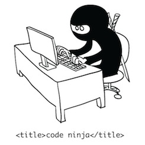
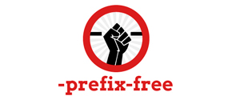
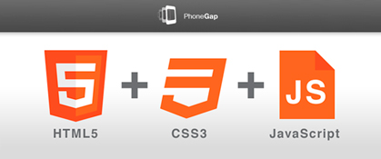

html5 hacks
#html5facil / #phpdaypuebla
¡Hola!
Soy Luis Antonio Gómez
Fundador y Co-fundador de:
Para Cualquier pregunta...
Solo levante su mano, en Twitter pueden utilizar los hashtag #phpdaypubla #html5facil para dar seguimiento a la conferencia.
Vayamos a lo importante...
¿Qué es un hack?
Es la modificación y adaptación de una tecnología para brindar mayor facilidad de trabajo.
Y en nuestro caso...
Los hacks nos han ayudado a crear cosas complejas y hacer retrocompatibles las nuevas tecnologías forzadamente.
HTML5 y la ayuda de los hacks
La magia oscura de la web
¿Cómo puede ser posible eso? Wow!
Quien crea hacks para la web, es un crack
Y no bromeo.

¿Imaginas no tener hacks y...
Estas por desarrollar un nuevo proyecto con websockets, localstorage, canvas, HTML5, CSS3 y sobre todo que sea lo más retrocompatible posible?
Esa es la importancia de los hacks
¿Y por qué tantos hacks?
Es simple, existen muchas tecnologías privativas y capacidades de las mismas, los hacks van en función de ello.
Siempre hay un crack del código
Hay desarrolladores tan increíbles que han inventado librerías que no te explicas como es que funciona.
¿El objetivo?
Sólo queremos desarrollar más rápido y mejor.
Primeros hacks en aparecer
Con javascript puro
<!--[if lt IE 9]>
<script type="text/javascript">
document.createElement("nav");
document.createElement("header");
document.createElement("footer");
document.createElement("section");
document.createElement("article");
document.createElement("aside");
document.createElement("hgroup");
</script>
<![endif]-->
Con CSS Puro
article,aside,details,figcaption,figure,
footer,header,hgroup,menu,nav,section {
display: block;
}
HTML5 Shiv
Nos permite habilitar las nuevas etiquetas semánticas en navegadores viejos.
CSS3 Pie
Es un archivo de comportamiento para IE (.htc) que habilita propiedades CSS3.
Diferencias en Javascript y Jquery
JAvascript puro
document.getElementById("alphanumeric").onkeypress=function(e){
//blah..blah..blah..
}
JQUERY FRamework
$('alphanumeric').click(function(e){
//blah..blah..blah..
});
Ahora vamos con los hacks super cool
Hacks semánticos
Modernizr
Una libreria que nos permite controlar el uso de las nuevas tecnologías de HTML5 en navegadores viejos.
Hacks para estilos
-prefix-free
Liberate de los odiosos prefijos de los motores de renderizado para CSS3.

Google wEB FONTS
Una linea de código y la posibilidad de utilizar fuentes personalizadas.
REsponsive.JS
Tu sitio web responsive design hasta en navegadores viejos.

Normalize.css
El mismo estilo por defecto en todos los navegadores.
Hacks para multimedia
MediaElement.js
Inserta y maneja el contenido multimedia de manera sencilla y con retrocompatibilidad.
cuepoint.js
Agrega de manera sencilla subtítulos o puntos de señal a tus videos en HTML5.
HAcks para gráficos
Raphael.js
Trabaja con vectores y canvas aún más fácil de lo que pensabas.
Kinetic.js
Un framework que permite animaciones de alto rendimiento, transiciones, capas de anidación de nodos, almacenamiento en caché, filtrado, control de eventos para aplicaciones y mucho más.
HAcks para interacción con el usuario
HTML5 Uploader
Permite utilizar todo el potencial de HTML5 para subir archivos, como el Drag and Drop por ejemplo.
Turn.JS
Crea el efecto flip de un libro rápidamente con el potencial de HTML5.
WYSIHTML5
Un editor de texto enriquecido de código abierto basado en HTML5.
Storage.js
Utiliza local storage en cualquier navegador.
Usa userData para IE 6 y 7, globalStorage para las versiones de Firefox 2 y 3.
skrollr
Es una libreria para utilizar el efecto Parallax junto con el evento scroll del navegador.
Hacks para Geolocalización
Geoloqi
Envia una notificación al usuario cuando salga de un radio específico en un lugar.

Parallel.js
Saca el máximo provecho de los WebWorkers en Javascript.
Hacks de conectividad
socket.io
Hace posible la web en tiempo real y retrocompatible utilizando websockets y más.

HTML5 En diferentes plataformas y fuera de la web.
Phonegap
Si eres desarrollador web, entonces también puedes crear aplicaciones móviles casi nativas.

Aplicaciones nativas en Windows 8
Ahora Microsoft actualiza Visual Studio para los desarrolladores web.
Firefox OS
Ahora las aplicaciones móviles son desarrolladas 100% en HTML5.
Pero escribir mucho código es cansado
¿Y si lo escribieras más rapido o mucho menos?
Precompiladores y metalenguajes
Emmet
Un plugin para muchos editores de texto desarrollado y optimizado para desarrolladores web con el fin de que escriban código más rapido.
Sass
Es un metalenguaje para escribir CSS que se utiliza para describir el estilo de un documento de manera limpia y estructural
Less
Un metalenguaje donde el CSS ahora es mucho más dinámico.
Stylus
Otro metalenguaje para CSS expresivo, dinámico y robusto.
Coffescript
CoffeeScript es un metalenguaje que se compila a JavaScript, permite escribir código más limpio y estructurado.
¿Preguntas?
¡Gracias por su atención!
Luis Antonio Gómez:
- @jimmylagp
- facebook.com/jimmylagp
- contacto@html5facil.com